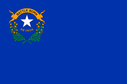

About Me
My name is Rebekah and I was born and raised in Las Vegas. I currently work as an insurance coordinator at a dental office. However, I truly wish to become a video game designer or developer. I live at home with my parents and my two younger siblings. We have a pitbull named Harley who is sweet and playful. I love to do anything creative and try new projects frequently.

Nevada
Nevada is mostly a semi-arid desert found in the Great Basin. South of the Great Basin are the Mojave Desert, while Lake Tahoe and the Sierra Nevada are on the western edge.